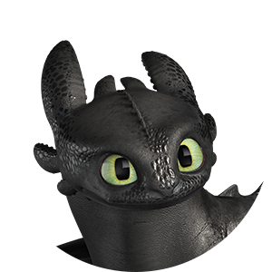

HICCUP
Hiccup, now 20, is the tenacious, spirited son of Stoick the Vast, chieftain of Berk. No longer a runt, but still lanky by comparison, Hiccup is the island’s ace flier and resident dragon expert.
Celebrated as a hometown hero for ushering in an era of peace between Vikings and dragons, Hiccup now prefers to spend his time exploring uncharted lands and discovering new dragons with the help of his trusty Night Fury, Toothless. However, Stoick’s plan to pass down the mantle of Chief to his son has Hiccup fleeing in the opposite direction, for fear of becoming his father and losing sight of himself. But as the call of adventure draws Hiccup deep into lands unknown, his search for identity will be answered in ways he could never have dreamed.
Toothless
Once thought of as the "unholy offspring of lightning and death itself", Toothless (20 in dragon years) has proven to be much more of a giant, winged pussycat than the stuff of nightmares. Playful, inquisitive, and intelligent, Toothless is more Hiccup's best friend than his pet. He is extremely protective of his Viking soul mate, and will stop at nothing to guard him from all harm. As the last known specimen of the Night Fury species, Toothless is indisputably special. He commands respect from dragons and humans alike. Toothless also possesses an echolocation sense not unlike radar or sonar. When flying through dark or cramped environments, Toothless issues a plasma blast in all directions. When the plasma bounces off the nearby terrain and returns to Toothless, it gives him an incredibly accurate reading of his surroundings.
HTTYD (Part-1)
HTTYD (Part-2)
Characters
- Hiccup Haddock III
- Drago Bludvist
- Astrid Hofferson
- Stoick the Vast
- Gobber the Belch
- The Red Death
- Toothless
- Fishlegs Ingerman
ASTRID
Astrid, 20, is the self-assured, competitive champion of the Dragon Races and Hiccup’s longtime girlfriend. Beautiful despite herself, she’s tough and rational, providing Hiccup with a blunt voice of reason while remaining his most outspoken supporter.
A strong sense of duty defines Astrid to the core. She will always do what must be done without regard for herself. So when trouble threatens the people and dragons she loves, Astrid stops at nothing to defend them, even though it means going rogue and defying Stoick’s orders.
STOICK

Stoick, 50, is the mythic and mighty Chieftain of Berk – a great, shaggy mountain of a man whose conquests have become the stuff of Viking legend.
A reformed dragon fighter, Stoick’s job as protector of the people is decidedly lighter since Hiccup ushered in an era of peace. Boastful and gregarious, Stoick is now the proudest father in Berk, forever singing Hiccup’s praises, even as his absentee son is off mapping the world instead of showing up for work. But when Stoick’s plan to retire and anoint Hiccup chief is disrupted by rumblings of a terrible foe’s return, Stoick wastes no time in breaking out the old armor and charging off to defend what is his.